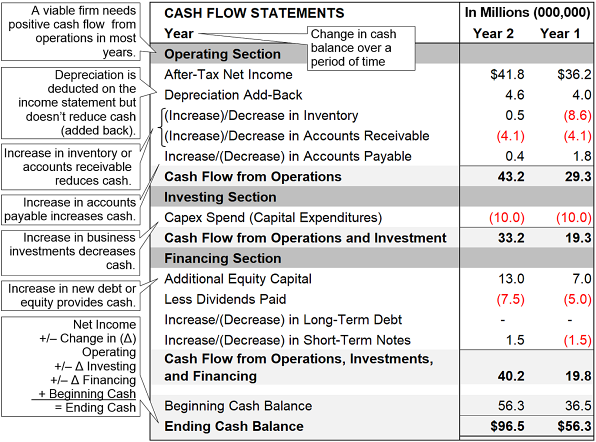
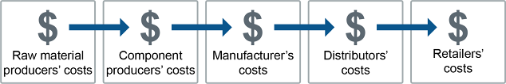
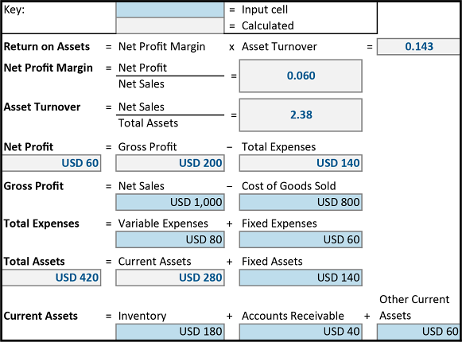

Key terms:
Standard Costing — Rate and Volume Standards:
Overhead Rate Example:
Efficiency Formula:
Efficiency = Standard hours produced ÷ Actual hours worked × 100%IFRS vs. US GAAP:
IFRS 5 Elements:
Inventory valuation methods (balance sheet):
Key income statement concepts:
Cash flow components:

SC cost areas to measure:
Multi-organization metrics address suboptimization (one partner optimizes at the expense of the whole chain):

4 groups of financial ratios for assessing supplier health:
Quick Ratio = (Current Assets − Inventories) ÷ Current LiabilitiesInventory Turnover = Sales ÷ Average Inventory (e.g., $100 sales ÷ $50 inventory = 2.0 turns)Inventory Days’ Outstanding = 365 ÷ Inventory Turnover (e.g., 365 ÷ 2 = 182.5 days)Current Debt to Equity = Current Liabilities ÷ Equity. Interest coverage ratio should be high (earnings covering interest payments).Net Profit Margin = Net Profit ÷ Net Sales (10% margin = $0.10 profit per $1 of sales).Altman Z-Score — bankruptcy prediction model:
Return on Assets (ROA):
ROA = Net Profit Margin × Asset TurnoverNet Profit Margin = Net Profit ÷ Net SalesAsset Turnover = Net Sales ÷ Total AssetsROA = Net Profit ÷ Total AssetsReturn on Equity (ROE) — extending ROA:
ROE = ROA × Financial Leverage (Total Assets ÷ Equity)How SC improvements increase ROA:

Click card to flip · Use arrows or shuffle to practise